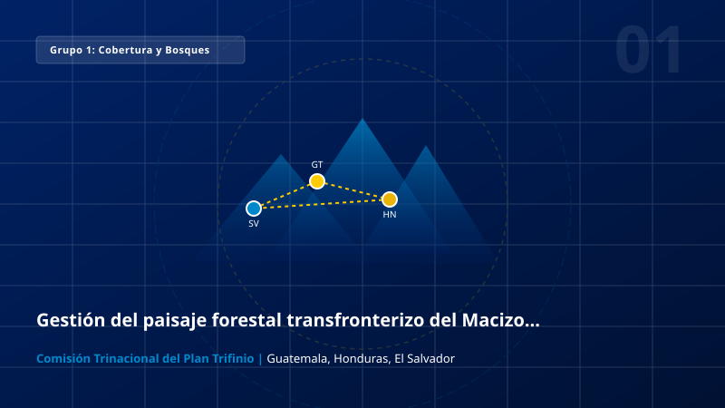
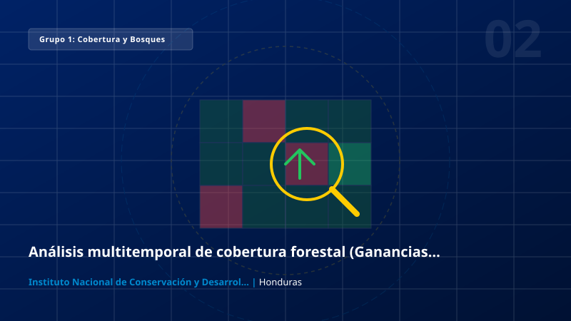
Grupo 1
Análisis multitemporal de cobertura forestal (Ganancias, pérdidas y alerta de deforestación) en múltiples áreas de Honduras
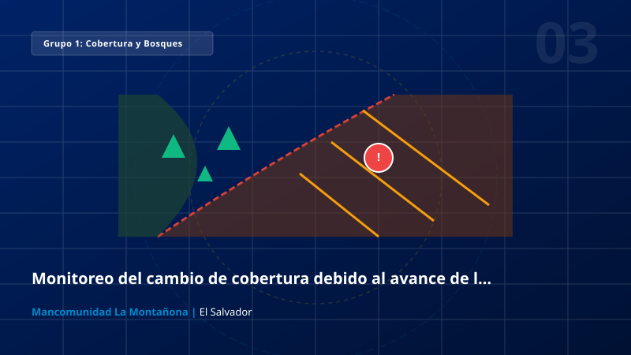
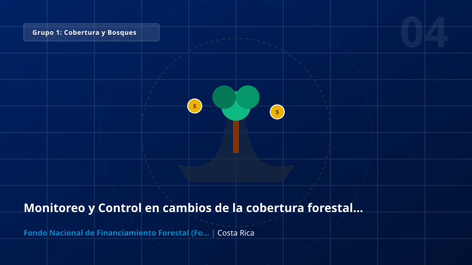
Grupo 1
Monitoreo y Control en cambios de la cobertura forestal en proyectos bajo el Programa de Pagos por Servicios Ambientales en Costa Rica


Grupo 1
Analisis de la Conectividad Biológica, Calidad del habitat de la Selva Maya Región Selva Lacandona, Complejo Usumacinta-Wanha’
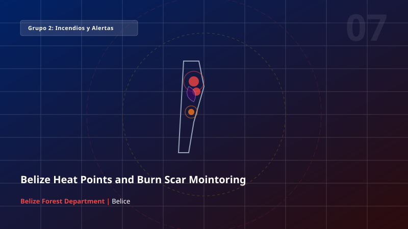
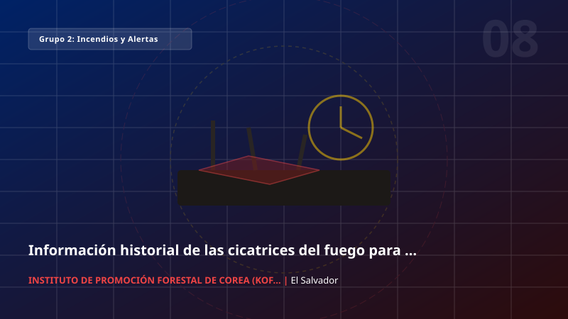
Grupo 2
Información historial de las cicatrices del fuego para realizar acciones de mitigación
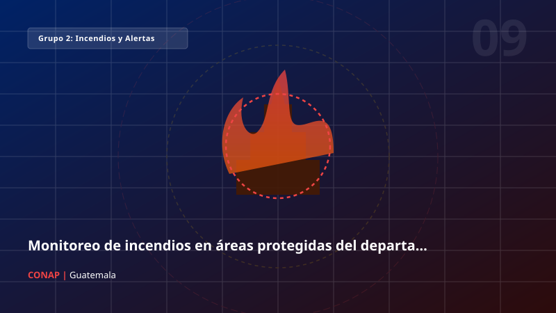

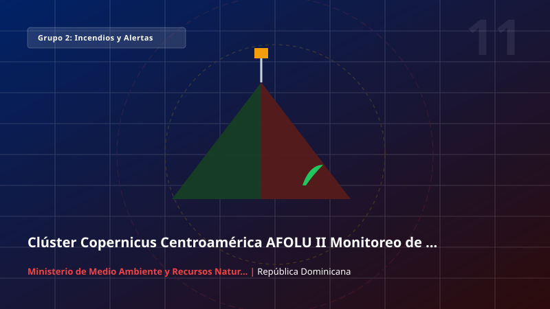
Grupo 2
Clúster Copernicus Centroamérica AFOLU II Monitoreo de la cobertura forestal y cicatrices de incendio en el Parque Nacional Valle Nuevo
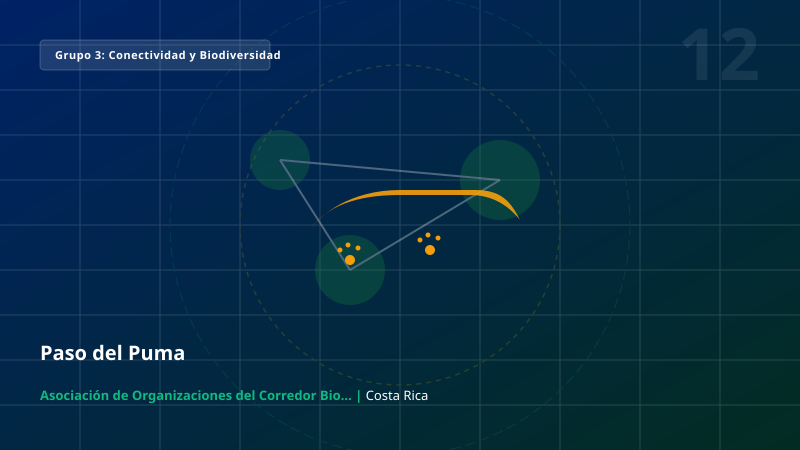

Grupo 3
Integración de datos Copernicus y biodiversidad para el análisis de conectividad ecológica en el Gran Bosque La Amistad
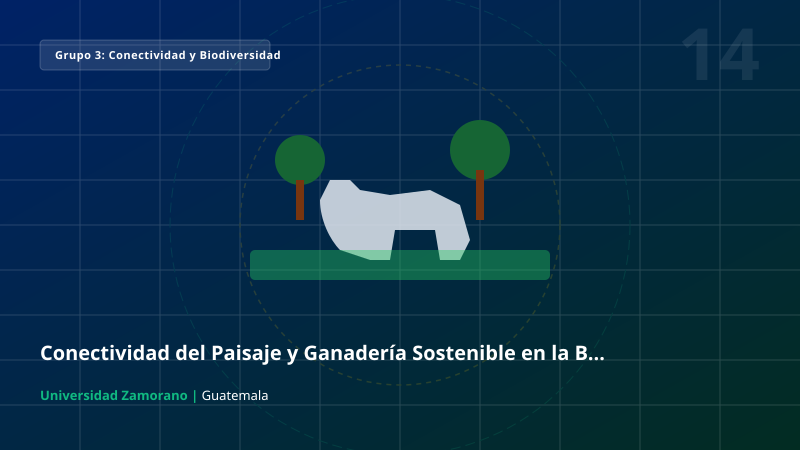
Grupo 3
Conectividad del Paisaje y Ganadería Sostenible en la Biosfera del Río Plátano (Algo como GeoConnect-RP)
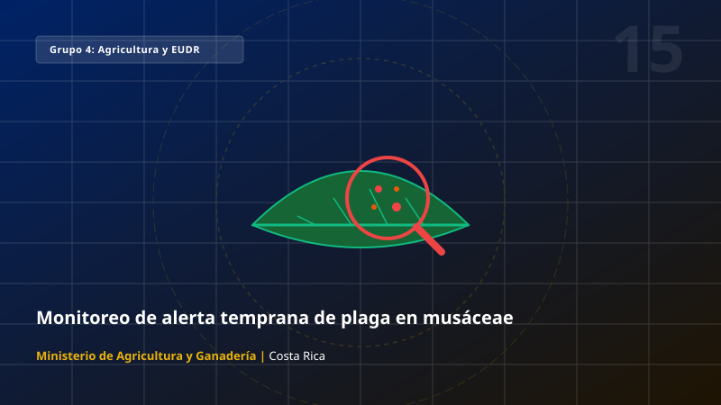

Grupo 4
Monitoreo de plantaciones forestales mediante teledetección y aprendizaje profundo
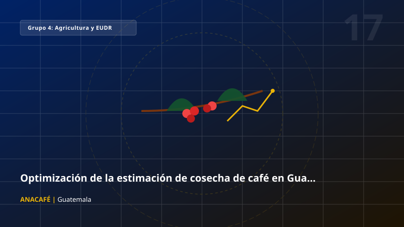


Grupo 4
Plataforma institucional para el seguimiento territorial de proyectos, riesgos ambientales y restauración prioritaria
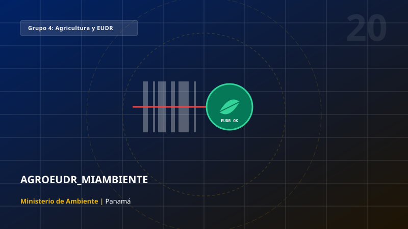